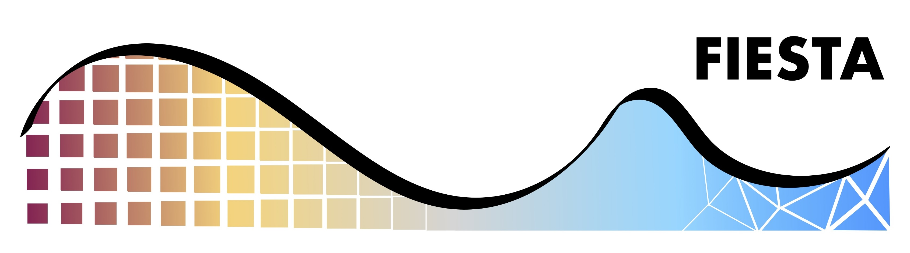
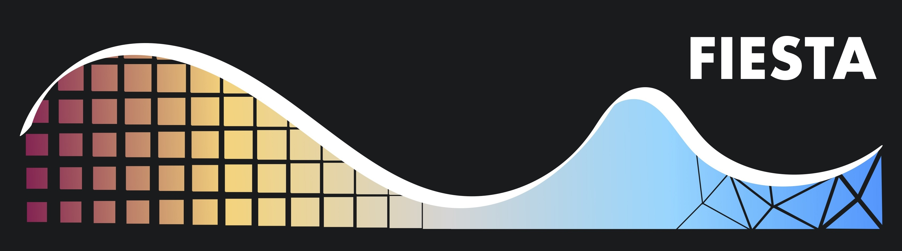

FIESTA: Field Interpolation and Estimation using Spatial Techniques and Algorithms¶
Introduction¶
FIESTA is a python library for general interpolation from uniform and non-uniform input points. The library
is written in python with numba acceleration for speed. The library has the optional capability to be used
on large data-sets by distributing jobs across multiple processes via MPI. This relies on the mpi4py
library and the MPI object from the shift-fft package (see here)
which is passed as an additional object into MPI related functions.
Showcase¶
The 2D density field computed with FIESTA (from the outputs of a cosmological simulation):

The velocity-field along the z-axis computed with FIESTA (from the outputs of a cosmological simulation):

Contents¶
Dependencies¶
Installation¶
FIESTA can be installed via pip:
pip install fiesta-pkg
or by cloning the repository:
git clone https://github.com/knaidoo29/FIESTA.git
cd FIESTA
pip install .
Once this is done you should be able to call FIESTA from python:
import fiesta
To use the MPI functionality please take a look at the documentation in FIESTA
which instructs users how to use the shift-fft MPI object and how to run
these distributed jobs successfully without errors or MPI related hanging.
Citation¶
If you use FIESTA in your work, please cite:
@software{naidoo_fiesta_2026,
author = {Krishna Naidoo},
title = {FIESTA: Field Interpolation and Estimation using Spatial Techniques and Algorithms},
month = may,
year = 2026,
publisher = {Zenodo},
doi = {10.5281/zenodo.20328944},
url = {https://doi.org/10.5281/zenodo.20328944},
}
Support¶
If you have any issues with the code or want to suggest ways to improve it please open a new issue (here) or (if you don’t have a github account) email krishna.naidoo.11@ucl.ac.uk.